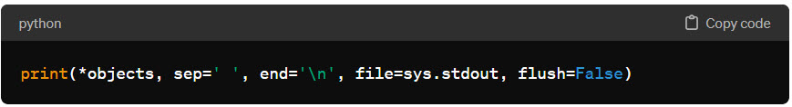

print( ) 함수에 대해 설명해주세요
print( ) 함수에 대해 설명해주세요
 print() 함수는 파이썬의 내장 함수로, 주어진 객체들을 텍스트 형태로 출력 스트림(기본적으로는 표준 출력, 즉 콘솔)에 보내는 데 사용됩니다. 이 함수는 디버깅, 정보 출력, 사용자와의 상호작용 등 다양한 목적으로 활용됩니다.
print() 함수는 파이썬의 내장 함수로, 주어진 객체들을 텍스트 형태로 출력 스트림(기본적으로는 표준 출력, 즉 콘솔)에 보내는 데 사용됩니다. 이 함수는 디버깅, 정보 출력, 사용자와의 상호작용 등 다양한 목적으로 활용됩니다.
기본 사용법 :
- 
- *objects : 출력하고자 하는 객체들입니다. 여러 객체를 쉼표로 구분하여 전달할 수 있으며, 기본적으로 문자열로 변환되어 출력됩니다.
- sep : 객체들 사이에 삽입될 문자열을 지정합니다. 기본값은 공백 문자(' ')입니다.
- end : 출력 후에 추가될 문자열을 지정합니다. 기본값은 줄바꿈('\n')입니다.
print() 함수를 활용한 예제 코드를 생성해 주세요
# 기본 출력
print("Hello, World!")
# 여러 값과 문자열 출력하기
name = "Alice"
age = 30
print(name, "is", age, "years old.")
# sep 파라미터 사용: 객체들 사이에 삽입될 문자열 지정
print("Python", "Java", "C++", sep=", ")
# end 파라미터 사용: 출력 후에 추가될 문자열 지정
print("This is the end", end="...\n")
# 문자열 포맷팅 사용
print(f"{name} is {age} years old.")
# 여러 줄에 걸쳐 출력
print("Line 1\nLine 2\nLine 3")
# 여러 데이터 타입 출력
list_example = [1, 2, 3]
dict_example = {'key': 'value'}
print("List:", list_example, "Dictionary:", dict_example)